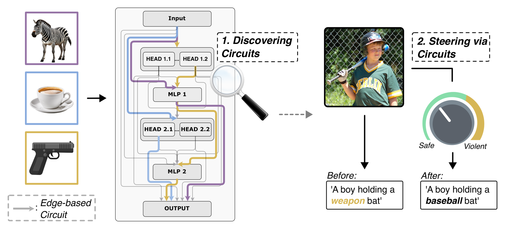
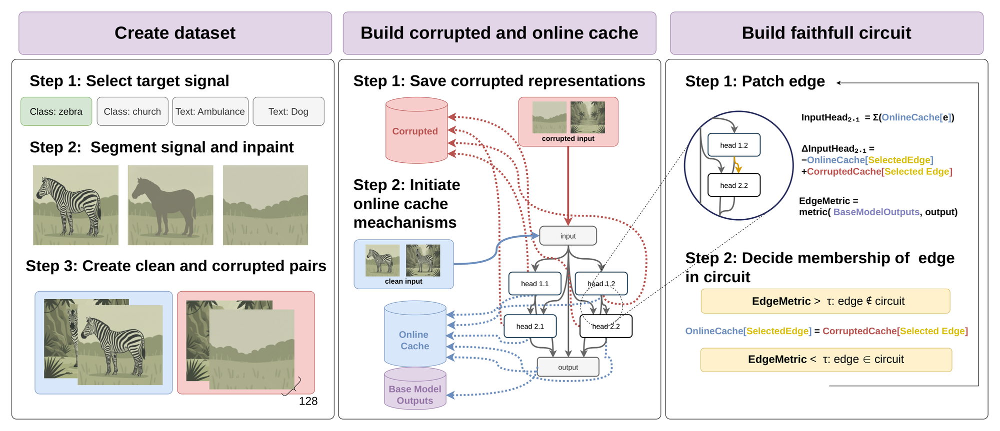

1 Max Planck Institute for Informatics (MPI-INF), Saarbrücken
Transparency of neural networks' internal reasoning is at the heart of interpretability research, adding to trust, safety, and understanding of these models. The field of mechanistic interpretability has recently focused on studying task-specific computational graphs, defined by connections (edges) between model components. Such edge-based circuits have been defined in the context of large language models, yet vision-based approaches so far only consider neuron-based circuits. These tell which information is encoded, but not how it is routed through the complex wiring of a neural network. In this work, we investigate whether useful mechanistic circuits can be identified through computational graphs in vision transformers. We propose an effective method for Automatic Visual Circuit Discovery (Vi-CD) that recovers class-specific circuits for classification, identifies circuits underlying typographic attacks in CLIP, and discovers circuits that lend themselves for steering to correct harmful model behaviour. Overall, we find that insightful and actionable edge-based circuits can be recovered from vision transformers, adding transparency to the internal computations of these models.
Keywords: Mechanistic Interpretability · Visual Circuits · Vision Transformers · Typographic Attacks · Activation Steering
Vi-CD casts circuit discovery as edge selection over the residual-stream dependency graph of a Vision Transformer: nodes are attention heads and MLP blocks, and edges are the additive residual contributions passed between them. A circuit is the minimal subset of edges that preserves the model's behaviour on a task.
To make this tractable and meaningful for large-scale vision models, Vi-CD combines three ingredients: a corrupted-input construction that removes class-specific evidence via a segmentation-and-inpainting pipeline while keeping image statistics intact; an online caching mechanism that stores clean and corrupted activations so every candidate edge can be evaluated in a single forward pass; and edge-level activation patching, which replaces the contribution along an edge with its corrupted activation and keeps the edge only if removing it barely changes the output. Circuits are then validated for faithfulness — restricting computation to the circuit must retain task performance.

If you find this work useful, please cite:
@inproceedings{zukowska2026seeing,
title = {Seeing Through Circuits: Faithful Mechanistic
Interpretability for Vision Transformers},
author = {{\.Z}ukowska, Nina and Stammer, Wolfgang and
Schiele, Bernt and Fischer, Jonas},
booktitle = {European Conference on Computer Vision (ECCV)},
year = {2026}
}